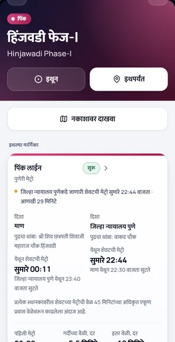

पुणे मेट्रो वेळापत्रक
वेळा संचालकांच्या अधिकृत वेळापत्रकांमधून आणि सूचनांमधून घेतल्या आहेत आणि आठवड्याच्या सर्व दिवशी सारख्याच असतात. सण आणि निवडणुकीच्या दिवशी संचालक कधीकधी वेळा बदलतात.
मार्गिकेनुसार वेळा
मेट्रो सुरू गर्दीच्या वेळा (जास्त वारंवार)
पर्पल लाईन
| पहिली मेट्रो | 06:00 |
|---|---|
| सेवा वेळ | 06:00–23:00 |
| शेवटची मेट्रो | महामेट्रो प्रत्येक स्थानकावरून सुटणाऱ्या शेवटच्या मेट्रोची वेळ जाहीर करत नाही; सेवा 23:00 वाजता संपते. |
| किती वेळाने | गर्दीच्या वेळी (08:00-11:00, 16:00-20:00): दर 6 मिनिटांनी इतर वेळी: दर 10 मिनिटांनी पडताळलेले नाही |
अधिकृत सेवा वेळ 06:00 ते 23:00 आहे. महामेट्रोने प्रत्येक टोकावरून सुटणाऱ्या शेवटच्या मेट्रोची वेळ जाहीर केलेली नाही. वारंवारता महामेट्रोचा हवाला देणाऱ्या सप्टेंबर 2026 मधील एका बातमीवरून घेतली आहे.
ॲक्वा लाईन
| पहिली मेट्रो | 06:00 |
|---|---|
| सेवा वेळ | 06:00–23:00 |
| शेवटची मेट्रो | महामेट्रो प्रत्येक स्थानकावरून सुटणाऱ्या शेवटच्या मेट्रोची वेळ जाहीर करत नाही; सेवा 23:00 वाजता संपते. |
| किती वेळाने | गर्दीच्या वेळी (08:00-11:00, 16:00-20:00): दर 6 मिनिटांनी इतर वेळी: दर 10 मिनिटांनी पडताळलेले नाही |
अधिकृत सेवा वेळ 06:00 ते 23:00 आहे. महामेट्रोने प्रत्येक टोकावरून सुटणाऱ्या शेवटच्या मेट्रोची वेळ जाहीर केलेली नाही. वारंवारता महामेट्रोचा हवाला देणाऱ्या सप्टेंबर 2026 मधील एका बातमीवरून घेतली आहे.
पिंक लाईन
| पहिली मेट्रो | 06:00 |
|---|---|
| शेवटची मेट्रो | 22:30 माण येथून 23:40 जिल्हा न्यायालय पुणे येथून |
| किती वेळाने | गर्दीच्या वेळी (07:30-09:30, 17:00-20:00): दर 5.5 मिनिटांनी इतर वेळी: दर 10 मिनिटांनी |
| एका टोकापासून दुसऱ्या टोकापर्यंत | 45 मिनिटे, 23.3 किमी (माण – जिल्हा न्यायालय पुणे) |
अधिकृत वेळापत्रक (1 नोव्हेंबर 2026). प्रवासी संख्येनुसार वारंवारता बदलू शकते, असे पुणेरी मेट्रोने म्हटले आहे.
सेवा सूचना
कोणताही संचालक थेट स्थिती प्रसिद्ध करत नाही. अडचणी आणि विशेष वेळांसाठी punemetrorail.org, punerimetro.in किंवा स्थानकावरील सूचना पाहा.
 पुणे मेट्रो मार्गदर्शक ॲप · Android आणि iPhone साठी मोफत
पुणे मेट्रो मार्गदर्शक ॲप · Android आणि iPhone साठी मोफत
घरी जाण्याची शेवटची मेट्रो चुकवू नका.
तुमच्या स्थानकावरून शेवटची मेट्रो कधी सुटते ते ॲप दाखवते, आणि निघण्याच्या 10, 20 किंवा 30 मिनिटे आधी आठवण करून देते.
- शेवटच्या मेट्रोची आठवण
- इंटरनेटशिवाय चालते
- जवळचे स्थानक

ॲपमध्ये काय आहे · या वेबसाइटप्रमाणेच अनधिकृत.

स्रोत
- Maha Metro Pune project profile (service hours and operational network) अधिकृत · तपासले 26 नोव्हेंबर 2026
- Pune Metro frequency: every 6 minutes at peak, about 10 off-peak (Sept 2026 report) दुय्यम · तपासले 8 नोव्हेंबर 2026
- Puneri Metro official time table (Pink Line service hours, frequency, travel time) अधिकृत · तपासले 8 नोव्हेंबर 2026